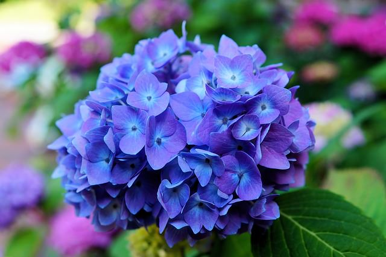
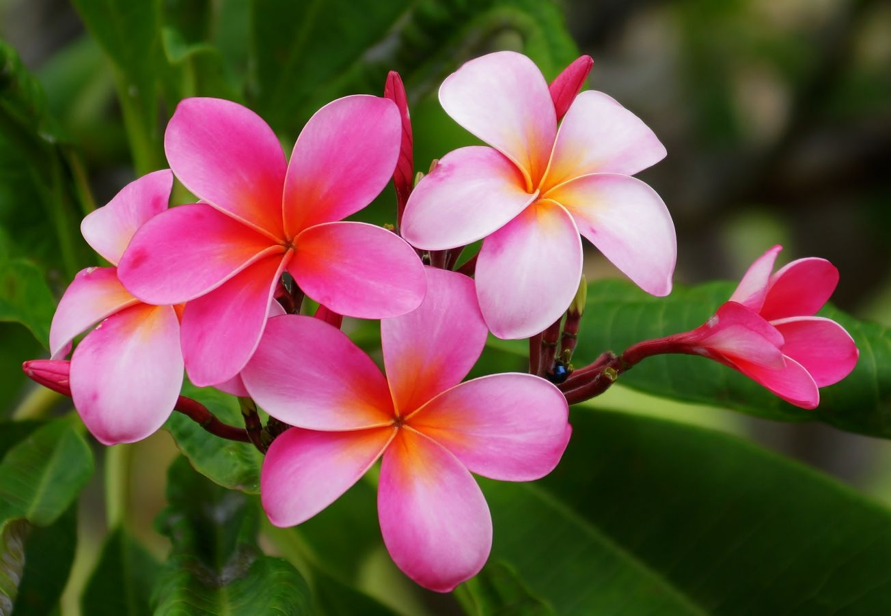

All About Flowers
Everything you've ever wanted to know about flowers



Flowers beguile us with their lovely scent and striking beauty, but many flowers have hidden attributes. Flowers and plants have been used medicinally for thousands of years. Some flowers, such as the lotus, have religious or historical significance. Many flowers may also have unusual characteristics or forms. Dive into the fascinating world of flower-lore and gain a fresh appreciation for these plants.